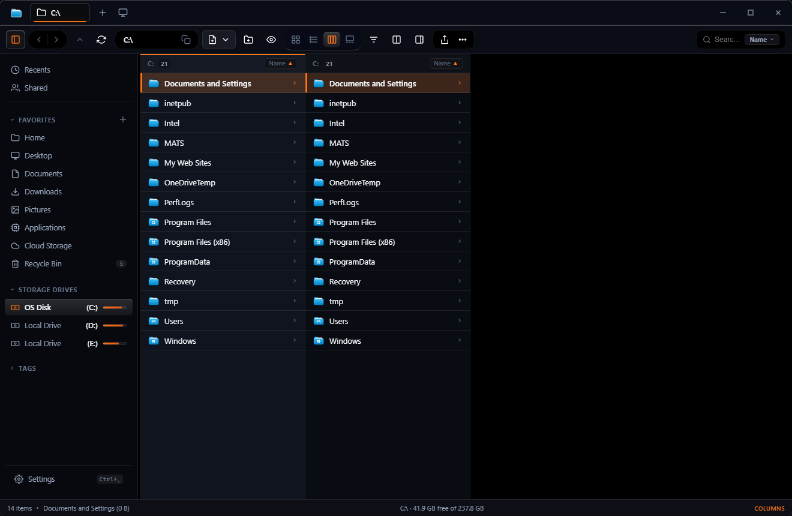
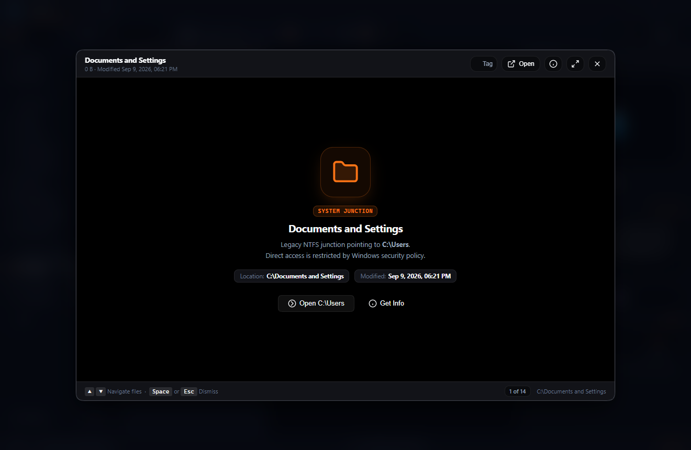
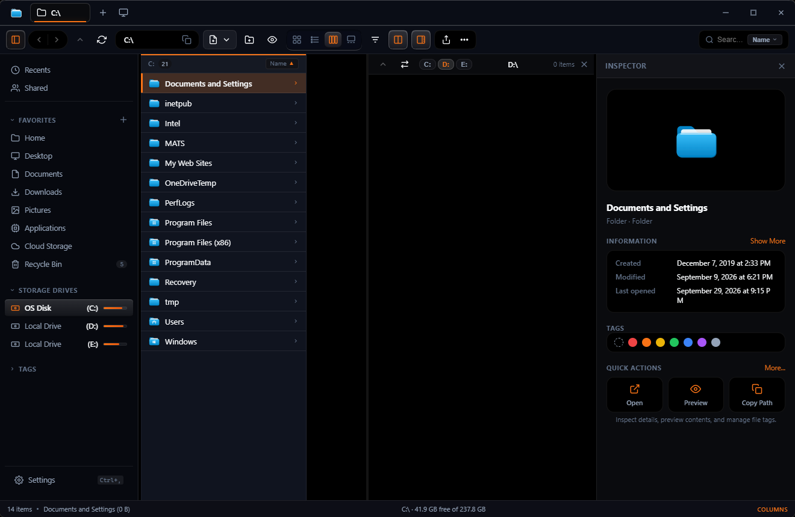
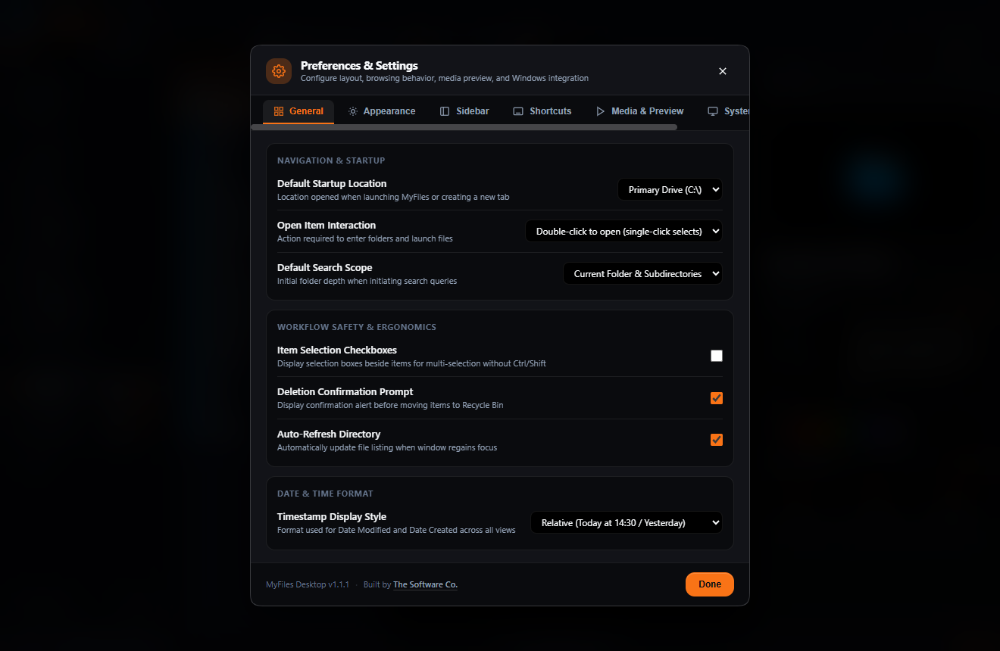

Combines the best ergonomics of macOS Finder — Spacebar Quick Look, Miller Columns, and Colored Tags — with native Windows power: dual-pane split workspace, instant 0ms context menus, and disk status gauges.

Zero bloat, zero advertising telemetry, and zero virtual DOM reconciliation lag.
Traverse deeply nested directory hierarchies effortlessly without losing your navigation context. 2D arrow keys, smooth horizontal scrolling sync, and folder depth badges.
Hit Space on any image, video, PDF, or markdown document. Seamless byte-range streaming via native media protocol.

Side-by-side file transfer with one-click drive switching tabs (C:, D:, E:), path synchronization, and keyboard focus swapping.

Deep #0f172a slate tones, liquid glass optical materials, consistent corner radiuses, and WCAG AA compliant contrast throughout all panels.

Why MyFiles provides the superior desktop experience on Windows.
| Capability | Windows 11 Explorer | macOS Sequoia Finder | MyFiles |
|---|---|---|---|
| Instant Spacebar Quick Look | No (Requires add-on) | Native | Instant (Media + PDF + Code + Archive) |
| Miller Columns View | No | Native | Native with 2D Arrow Keys |
| Dual-Pane Split Workspace | No | No | Built-in (Ctrl+Shift+D) |
| Right-Click Context Menu Latency | 400–800 ms | ~100 ms | Instant (0 ms) |
| Local Wi-Fi QR Mobile Transfer | Cloud only | AirDrop (Apple only) | Any Device via Wi-Fi QR |
| 2-Phase SHA-256 Deduplication | No | No | Built-in Native Engine |
| Baseline RAM Footprint | 250–500 MB | 150–300 MB | 120–180 MB |